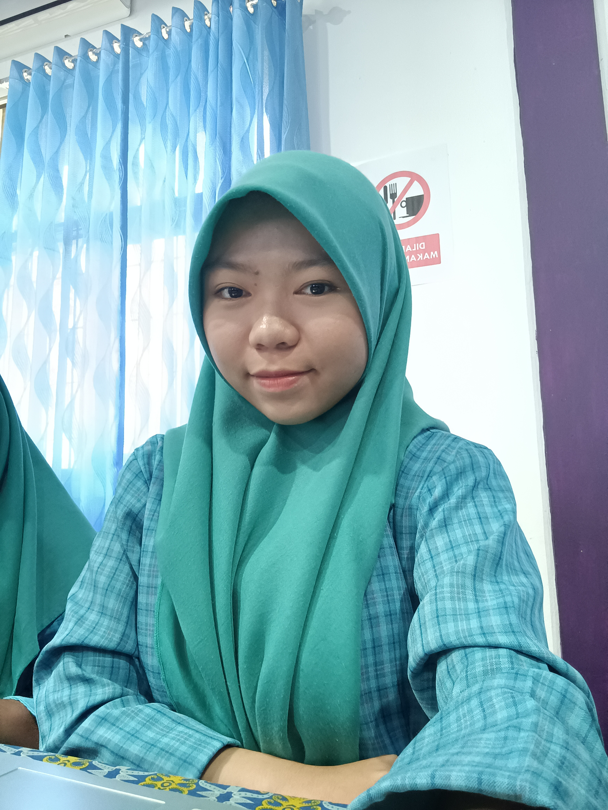

PROYEK 01
Menggunakan Mail Merge di Microsoft Word
Mail Merge membantu kita untuk membuat sebuah dokumen yang isinya sama untuk penerima yang berbeda secara cepat dan mudah.
Lihat Tugas di Google DriveHALO, SELAMAT DATANG DI PORTOFOLIO SAYA
Saya adalah mahasiswa Teknik Komputer kelas TK3C. Saya belajar tentang perakitan komputer, jaringan, sensor, sistem digital, dan pemrograman dasar. Saya tertarik pada bidang loT dan bagaimana perangkat keras dan perangkat lunak bisa bekerja bersama untuk menyelesaikan masalah sehari-hari.

TENTANG SAYA
Perkenalkan, saya Ayu Puspita Sari. Saya memiliki ketertarikan pada bidang Internet of Things (loT), hardware, dan jaringan komputer,pengelolahan data. Saya senang belajar hal baru, bekerja sama dalam tim, dan memberikan hasil terbaik dalam setiap kesempatan.
Saat ini saya mahasiswa semester akhir di Politeknik Negeri Samarinda.
KARYA & PENGALAMAN
Mail Merge membantu kita untuk membuat sebuah dokumen yang isinya sama untuk penerima yang berbeda secara cepat dan mudah.
Lihat Tugas di Google DriveMenyusun dan merapikan tabel data serta menghitung nilai rata-rata tahun dan nilai rata-rata kota bandara.
Lihat Tugas di Google DriveMenggambarkan alur pembacaan sinyal, proses perbandingan, serta penggulangan pencarian posisi terbaik.
Lihat Tugas di Google DriveKEMAMPUAN
Microsoft Word
Microsoft Excel Pemograman C++ dasar Penyusunan laporan Matlab Git & GitHub Google Workspace ThinkercardMARI TERHUBUNG
Punya pertanyaan, ingin mengenal saya lebih jauh?
Kirim Emailjiang05ayu@gmail.com